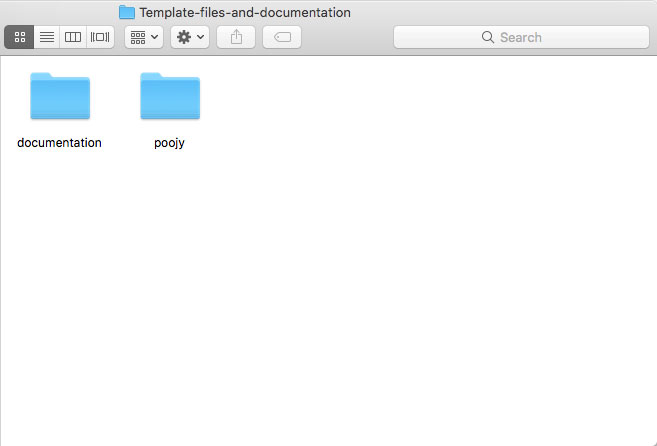

Get Started
Thank you so much for purchasing our item. If you have any questions that are beyond the scope of this help file, please feel free to contact us via the support tab at Themeforest. Thanks so much!
Installation
After you unzip the package received from themeforest you will have the following in the extracted folder.

If you'd like to work on localhost/local server first before upload it to your live server, you can copy the Vivian folder into your local server directory. Or simply upload all files into your hosting if you feel confident enough to edit the files directly in your live/online server.
Page Structure
Vivian designed for simple personal one page template, please always follow the page structure below
<!-- ATTENTION : For complete code, please open "Vivian/index.html", do not directly copy the code below -->
<body>
<!-- The preloader -->
<div id="Vivian-site-preloader"></div>
<!-- The main wrapper -->
<div id="site" class="page">
<!-- ============================= ** INTRO ** ============================= -->
<div id="intro"></div>
<!-- ============================= ** HEADER ** ============================= -->
<header id="main-header" class="default-header"></header>
<!-- ============================= ** CONTENT ** ============================= -->
<main id="main" class="main">
<!-- The important inner wrapper to hold your one page content -->
<div class="inner-pages-wrap">
<!-- ================= 01. INDEX SECTION ================ -->
<section id="home" class="page-section site-hero"></section>
<!-- ================= 02 SECTION ================ -->
<section id="about" class="page-section"></section>
<!-- ================= 03 SECTION ================ -->
<section id="service" class="page-section"></section>
<!--
- Each section is wrapped with <section> with class 'page-section'
- For complete code please open "Vivian/index.html"
-->
...
</div>
</main>
<!-- =========================== ** FOOTER ** =========================== -->
<footer id="site-footer"></footer>
</div>
</body>
You can copy anything you want from the premade template into your new template, just make sure to pay attention when copying the markup, check carefully the opening tag and the closing tag - so you're layout will not break.
Required Styles & Scripts
Make sure the lines below are not dissapear from the <head> tag
<!-- Google font(s) -->
<link rel="dns-prefetch" href="//fonts.googleapis.com" />
<link href="//fonts.googleapis.com/css?family=Poppins:300,400,500,600,700|IBM+Plex+Sans:300,400,500,600,700" rel="stylesheet">
<!-- Stylesheet (CSS) files -->
<link rel="stylesheet" href="assets/bootstrap/css/bootstrap.min.css">
<link rel="stylesheet" href="assets/css/plugins.css">
<link rel="stylesheet" href="assets/css/site.css">
<link rel="stylesheet" href="assets/css/skin.css">
And make sure these lines below are still exists before the closing </body> tag
<script type='text/javascript'>
/* <![CDATA[ */
var VivianOptions = {
"imgParticle" : "assets/images/rose-small.png", // particle image, for intro text animation
"audio": "", // audio file
"volume": 17, // 0 - 100, define the volume here
"map": {
"lat" : -37.8173277, // Define the latitude here
"lon" : 144.9537353, // Define the longitude here
"marker" : 'assets/images/pin.svg' // Define the map marker icon
}
};
/* ]]> */
</script>
<!-- Scripts -->
<script src="assets/js/jquery.min.js"></script>
<script src="assets/js/plugins.js"></script>
<script src="assets/js/app.js"></script>
Editing Skin
We have make separate CSS for skin. You can create a new CSS file and copy all code from assets/css/skin.css into your CSS file and start making the changes.
Or you can simply edit the assets/css/skin.css file directly to change the template skin
If you're good with Sass, we also include the SCSS file in assets/scss/ folder.
Favicon
To set your own favicon. Please replace the "favicon.png" inside /assets/images/ folder.
Changing the logo
For logo, please change the image of this line on each html file
<header id="main-header" class="default-header">
<div class="header-ui">
<nav class="navbar">
<a class="navbar-brand" href="index.html" rel="home">
<img src="assets/images/logo.png" srcset="assets/images/logo.png 2x" alt="Vivian logo" />
</a>
...
Main Navigation Menu
Please follow the current markup of main navigation menu. As the purpose of this template is for personal cv/portfolio, currently the menu do not support the dropdowns menu.
<!-- MENU / NAVIGATION -->
<div class="main-nav-wrap">
<div class="main-nav-ui">
<ul class="main-nav nav">
<li class="nav-item">
<a class="nav-link" href="index.html#home">Home</a>
</li>
<li class="nav-item">
<a class="nav-link" href="index.html#about">About me</a>
</li>
<li class="nav-item">
<a class="nav-link" href="index.html#services">Services</a>
</li>
<li class="nav-item">
<a class="nav-link" href="index.html#contact">Contact</a>
</li>
</ul>
<!-- close button for small device -->
<button type="button" id="mobile-menu-close"><i class="icon ion-ios-close"></i></button>
</div>
</div>
The main section
The main section will hold all your one page content sections.
<!-- ============================= ** CONTENT ** ============================= -->
<main id="main" class="main">
<!-- The important inner wrapper to hold your one page content -->
<div class="inner-pages-wrap">
<!-- ================= 01. INDEX SECTION ================ -->
<section id="home" class="page-section site-hero"></section>
<!-- ================= 02 SECTION ================ -->
<section id="about" class="page-section"></section>
<!-- ================= 03 SECTION ================ -->
<section id="service" class="page-section"></section>
<!--
- Each section is wrapped with <section> with class 'page-section'
- For complete code please open "Vivian/index.html"
-->
...
</div>
</main>
The single portfolio template which will be opened using Ajax, have slightly different markup in the main section.
<!-- ============================= ** CONTENT ** ============================= -->
<main id="main" class="main">
<!--
* @since Vivian 1.0.0
* make sure to wrap your single portfolio content with <article class="single-portfolio">
* Need this to make sure Ajax working on the site index
-->
<article class="single-portfolio">
...
</article>
</main>
Portfolio Showcase
This template using a custom fullscreen slide to showcase portfolio, please follow the mark up below
<section id="home" class="page-section site-hero">
<div id="project-gallery">
<ul class="project-items">
<!-- portfolio item -->
<li class="project-item hero-slide-item">
<!-- portfolio image -->
<img src="media-placeholder/hero.png" alt="" />
<!-- The content (Title, portfolio category and button) -->
<div class="gallery-content d-flex align-items-center">
<div class="container d-block">
<!-- portfolio title -->
<h2 class="entry-title"><strong>Fighting</strong> Fish</h2>
<!-- portfolio category -->
<span class="project-cat">Experimental</span>
<!--
- link to your single portfolio template
- make sure to use the class "to-single-project"
-->
<a class="btn btn-outline-light btn-lg to-single-project" href="single-portfolio.html">View project</a>
</div>
</div>
</li>
....
</ul>
<!-- Prev / Next slide buttons -->
<a id="project-gallery-next" href="#">
<i class="icon ion-ios-arrow-forward"></i>
</a>
<a id="project-gallery-prev" href="#">
<i class="icon ion-ios-arrow-back"></i>
</a>
</div>
</section>
Reveal effect
You can apply the reveal effect (a.k.a animation when section is in viewport) on almost all elements, such as paragraph <p>, heading h1 - h6, <div> tag, etc. You just need to add has-reveal-effect class attribute and data-effect="" attribute to the markup.
Note: you can't apply directly the effect to an image, you need to wrap the image with <div> or <figure>, and add the class name and data-effect="" attribute to it.
<div class="has-reveal-effect" data-effect="fadeInTop">
This div will fade in from bottom to the original position
</div>
<!-- Image below will reveal from left to right -->
<figure class="has-reveal-effect" data-effect="revealRight">
<img src="awesome.jpg" alt="" />
</figure>
Complete list of data-effect attribute
| fadeIn | fadeInTop | fadeInBottom | fadeInLeft | fadeInRight | |
| revealTop | revealBottom | revealLeft | revealRight | ||
Changing Font(s)
This template use Poppins and IBM Plex Sans font.
To change the font you can edit the line inside <head> tag
<link href="//fonts.googleapis.com/css?family=Poppins:300,400,500,600,700|IBM+Plex+Sans:300,400,500,600,700" rel="stylesheet">
Go to https://fonts.google.com/ to define which font you want to use. After that, please edit /assets/css/skin.css and change any "font-family" value with the new font name.
Credits
| Images | Pexels.com | Unsplash.com |
| Audio (Demo) | Puzzle by Drake Stafford | |
| Icon | Ion Icons → How to use | |
| Scripts | Appear Js | Anime js |
| Pixi js | Swiper | |
| Masonry | Magnific Popup | |
| Bootstrap | ||